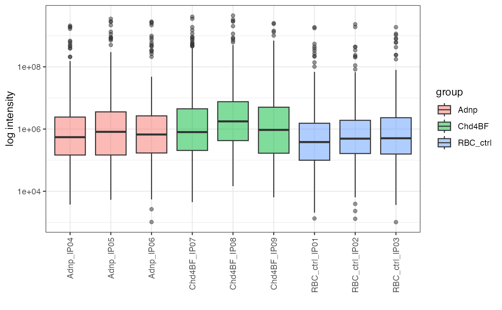

makeIntensityBoxplots.RdGenerate boxplots of the intensity distributions for the samples in a
SummarizedExperiment object.
makeIntensityBoxplots(sce, assayName, doLog, ylab, maxNGroups = 25)A SummarizedExperiment object (or a derivative). The
colData must have columns named "sample" and
"group", for grouping and coloring the values, respectively.
Character scalar, the name of the assay of sce
to use for the plots.
Logical scalar, whether to log-transform the y-axis.
Character scalar, the label to use for the y-axis.
Numeric scalar, the maximum number of groups to display
in the legend. If there are more than maxNGroups groups, the
legend is suppressed.
A ggplot object.
mqFile <- system.file("extdata", "mq_example", "1356_proteinGroups.txt",
package = "einprot")
samples <- c("Adnp_IP04", "Adnp_IP05", "Adnp_IP06",
"Chd4BF_IP07", "Chd4BF_IP08", "Chd4BF_IP09",
"RBC_ctrl_IP01", "RBC_ctrl_IP02", "RBC_ctrl_IP03")
out <- importExperiment(inFile = mqFile, iColPattern = "^iBAQ\\.",
includeOnlySamples = samples)
sampleAnnot <- data.frame(sample = samples,
group = gsub("_IP.*", "", samples))
sce <- addSampleAnnots(out$sce, sampleAnnot = sampleAnnot)
makeIntensityBoxplots(sce, assayName = "iBAQ", doLog = TRUE,
ylab = "log intensity")
#> Warning: log-10 transformation introduced infinite values.
#> Warning: Removed 1497 rows containing non-finite outside the scale range
#> (`stat_boxplot()`).
